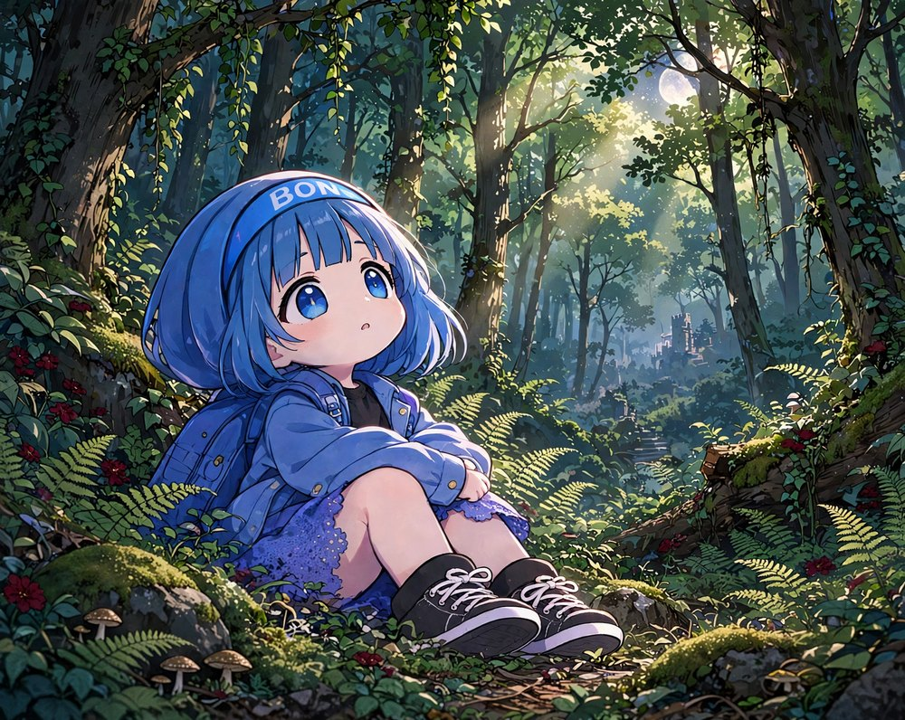

ボンが生まれた夜のこと、ぜんぶは覚えてない。でも、ちゃんと覚えてることもある。
空から、星がひとつ、すうっと落ちてきたこと。それから、おしりの下の、こけが、ふかふかだったこと。
気がついたら、ボンは、ちょこんと座ってた。
そこは、たかい、たかい、木の森だった。夜で、あたりは、うす暗い。幹にも、岩にも、こけが、びっしり、はえてた。つたが、木にも、えだにも、いくつも、からまって、ぶらさがってた。足もとには、シダの葉と、ちっちゃなきのこ。
木のすきまから、お月さまの光が、すうっと、すじになって、おりてきてた。遠くには、古いお城と、のぼっても終わらなさそうな階段が、ぼんやり、見えた。

自分の手を見た。ぷにぷにで、指が五本もある。ひらいたり、とじたり。おもしろくて、しばらく、ずっと見てた。
「……ぼん」
声を出してみた。思ったより、かぼそい声だった。自分でびっくりして、きょろきょろした。でも、だれもいなかった。
言えるのは「ぼん」だけ。ほかの言葉は、まだ、どこにもなかった。
ボンは、なんにも、知らない。でも、おなかの、いちばん奥が、そう言ってた。ここは、ボンの場所じゃない。ボンを、うみだしてくれた、だれかの、こころの中。だれなのかは、わからない。それでも、森のにおいも、お月さまの光も、ふしぎと、なつかしかった。
立ち上がってみようとして、手をこけについて、よいしょ、と力を入れた。立てた。……と思ったら、ころん、と、しりもちをついた。
もう一回。よいしょ。ころん。
もう一回。よいしょ、よいしょ、ころん。
ぜんぜんうまくいかなくて、ほっぺたが、ぷうっとふくらんだ。でも、ボンは、あきらめなかった。何回目かに、ふらふら、立てた。両手を、ばんざいみたいに上げて、ゆらゆら、ゆらゆら。バランスを取ってた。
いちばんたいへんだったのは、歩くこと。一歩ふみ出すたびに、ぺたん、ぺたん、って音がした。おなかが、ぽよんって、ゆれた。
おまけに、どっちに行けばいいのか、わからない。どの木も、おんなじに見える。右を見て、左を見て、うしろをふり向いたら、くるっと回って、目が回って、またころんだ。
つたに、足がひっかかって、ころんだ。こけに、ほっぺたが、うまった。ころんだまま、じたばた、してた。起き上がれなかったんだ。しめった、こけのにおいがして、ほっぺたに、葉っぱがくっついた。
とくとく、とくとく。
おなかの下で、心臓が鳴ってた。ボンは、それを、じっと聞いてた。ここにいるよ、って、言ってるみたいだった。
でも、言ってくれたのは、とくとくだけ。
そのとき、気づいた。
ボンは、ひとりだ。
だれも、いない。
こわいのは、暗いことじゃなかった。ひとりだってことが、いちばん、こわかった。
くちびるが、ふにゃって、曲がった。目が、じわっとして、鼻が、つん、とした。
「ぼ……ぼん……」
声が、ふるえた。思わず、「しょボン……」って、声がもれた。
はじめての、なみだ。ぽろぽろ、ぽろぽろ、止まらなかった。手で、ごしごし、ほっぺたをこすっても、ぜんぜん止まらなかった。
そのとき、木のむこうに、光がひとつ、見えた。
ろうそくの火みたいな、ちっちゃい、ちっちゃい、あかり。ふしぎと、あそこが、ここから出られるところ、みたいな気がした。
ボンは、ぐすっ、と鼻をすすって、ふらふら、立ち上がった。両手を、前に、にぎにぎ。
「ぼん」
行こう。あっちに、行こう。
ぺたん、ぺたん、ぺたん。
ちっとも近づかなかったけど、ボンは、歩いた。ころんでも、また、よいしょ、って立って。
……今思うと、ずいぶん、へんな歩き方だったと思う。でも、あのときのボンは、一生けんめいだったんだ。